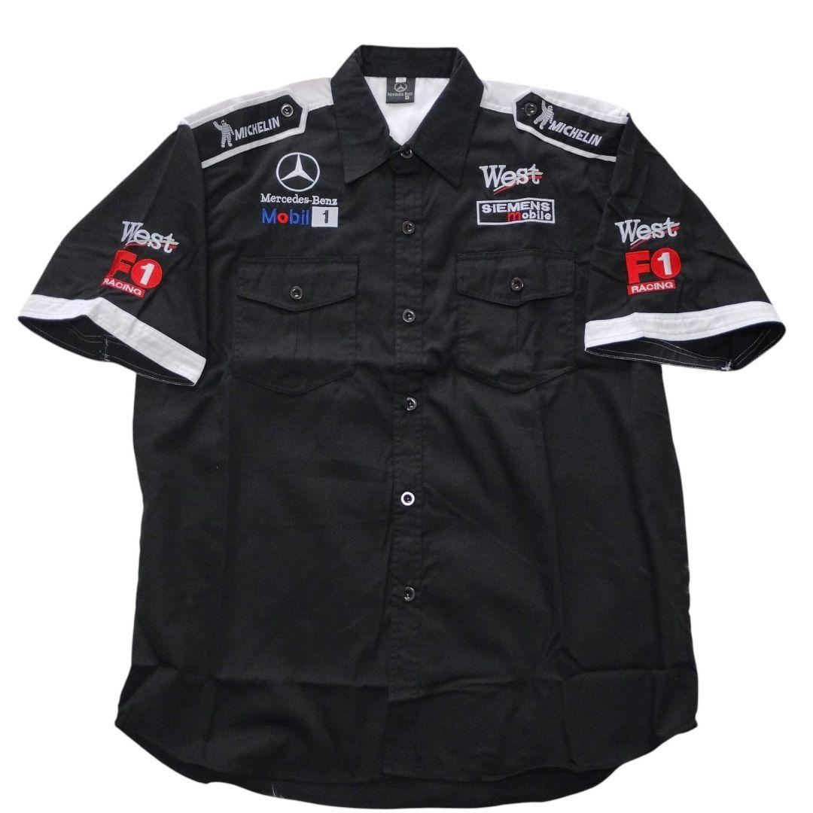

Sob encomendaCamisa de pit · Mercedes
Camisa de pit da West McLaren-Mercedes, começo dos anos 2000. West, Mercedes, Mobil 1, Michelin, Siemens: os patrocinadores das flechas de prata, todos bordados no peito. Roupa de quem trabalhava no box, não réplica de arquibancada.